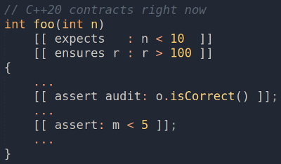

Пробуем контрактное программирование С++20 уже сейчас

В С++20 появилось контрактное программирование. На текущий момент ни один компилятор ещё не реализовал поддержку этой возможности.
Но есть способ уже сейчас попробовать использовать контракты из C++20, так как это описано в стандарте.
Есть форк clang, поддерживающий контракты. На его примере я рассказываю как пользоваться контрактами, чтобы как только фича появилась в вашем любимом компиляторе, вы сразу же могли начать её использовать.
Про контрактное программирование уже написано много, но в двух словах расскажу что это такое и для чего нужно.
В основе парадигмы контрактов лежит логика Хоара (1, 2).
Логика Хоара – это способ формального доказательства корректности алгоритма. Она оперирует такими понятиями, как предусловие, постусловие и инвариант. С практической точки зрения, использование логики Хоара это, во-первых, способ формального доказательства корректности программы в тех случаях, когда ошибки могут привести к катастрофе или гибели людей. Во-вторых, способ повысить надёжность программы, наряду со статическим анализом и тестированием.
Основная идея контрактов в том, что по аналогии с контрактами в бизнесе, для каждой функции или метода описываются договорённости. Эти договорённости должны соблюдать как вызывающая сторона, так и вызываемая. Неотъемлемой частью контрактов является как минимум два режима сборки – отладочный и продуктовый. В зависимости от режима сборки контракты должны себя вести по разному. Наиболее распространённой практикой является проверка контрактов в отладочной сборке и их игнорирование в продуктовой.
Иногда в продуктовой сборке контракты тоже проверяются и их невыполнение может, например, вести к генерации исключения.
Основное отличие использования контрактов от «классического» подхода в том, что вызывающая сторона должна соблюдать предусловия вызываемой стороны, которые описываются в контракте, а вызываемая должна соблюдать свои постусловия и инварианты. Соответственно, вызываемая сторона не обязана проверять корректность передаваемых её параметров. Эта обязанность возлагается контрактом на вызывающую сторону.
Несоблюдение контрактов должно быть обнаружено на этапе тестирования и дополняет все виды тестов: модульные интеграционные и т. д.
На первый взгляд, использование контрактов ведёт к усложнению разработки и ухудшает читаемость кода. На самом деле, всё как раз наоборот. Приверженцам статической типизации будет проще всего оценить пользу контрактов, потому что простейшим их вариантом является описание типов в сигнатуре методов и функций.
Итак, какую пользу дают контракты:
- Улучшают читаемость кода за счёт явного документирования.
- Повышают надёжность кода, дополняя собой тестирование.
- Позволяют компиляторам использовать низкоуровневые оптимизации и генерировать более быстрый код в расчёте на соблюдение контракта. В последнем случае несоблюдение контракта в релизной сборке может вести к UB.
Контрактное программирование реализовано во многих языках. Наиболее яркие примеры, это Eiffel, где парадигма была впервые реализована, и D, в D контракты являются частью языка.
В C++, до стандарта C++20, контракты можно было использовать в виде отдельных библиотек.
Такой подход имеет ряд недостатков:
- Весьма неуклюжий синтаксис с использованием макросов.
- Отсутствие единого стиля.
- Невозможность использования контрактов компилятором для оптимизации кода.
В основе библиотечных реализаций обычно лежит использование старого доброго assert’а и препроцессорных директив, проверяющих наличие флага компиляции.
Использование контрактов в таком виде, действительно делает код уродливым и нечитаемым. Это одна из причин, почему использование контрактов в C++ мало практикуется.
Забегая вперёд, покажу как в C++20 будет выглядеть использование контрактов. А затем, разберём всё это подробнее:
int f(int x, int y)
[[ expects: x > 0 ]] // precondition
[[ expects: y > 0 ]] // precondition
[[ ensures r: r < x + y ]] // postcondition
{
int z = (x - x%y) / y;
[[ assert: z >= 0 ]]; // assertion
return z + y;
}
К сожалению, на текущий момент ни один из широко используемых компиляторов ещё не реализовал поддержку контрактов. Но есть выход.
ARCOS research group из Universidad Carlos III de Madrid реализовали экспериментальную поддержку контрактов в форке clang++.
Чтобы не «писать код на бумажке», а иметь возможность сразу же попробовать новые возможности в деле, мы можем собрать этот форк и с его помощью пробовать приводимые ниже примеры.
Инструкция по сборке описана в readme репозитория на Гитхабе https://github.com/arcosuc3m/clang-contracts
git clone https://github.com/arcosuc3m/clang-contracts/
mkdir -p clang-contracts/build/ && cd clang-contracts/build/
cmake -G "Unix Makefiles" -DLLVM_USE_LINKER=gold -DBUILD_SHARED_LIBS=ON -DLLVM_USE_SPLIT_DWARF=ON -DLLVM_OPTIMIZED_TABLEGEN=ON ../
make -j8
У меня не возникло проблем при сборке, но компиляция исходников занимает очень много времени.
Для компиляции примеров вам нужно будет явно указать путь к бинарнику clang++. Например, у меня это выглядит примерно так
/home/valmat/work/git/clang-contracts/build/bin/clang++ -std=c++2a -build-level=audit -g test.cpp -o test.bin
Я подготовил примеры, чтобы вам было удобно исследовать контракты на примерах реального кода. Предлагаю, прежде чем приступить к чению следующего раздела, склонировать и скомпилировать примеры.
git clone https://github.com/valmat/cpp20-contracts-examples/
cd cpp20-contracts-examples
make CPP=/path/to/clang++
Здесь /path/to/clang++ путь к бинарнику clang++ вашей сборки экспериментального компилятора.
Кроме самого компилятора, ARCOS research group подготовили свою версию Compiler Explorer для своего форка.
Теперь ничего не мешает нам приступить к исследованию возможностей, которые даёт контрактное программирование, и сразу пробовать эти возможности в деле.
Как уже было сказано выше, контракты строятся из предусловий, постусловий и инвариантов (утверждений).
В C++20 для этого используются атрибуты со следующим синтаксисом
[[contract-attribute modifier identifier: conditional-expression]]
Где contract-attribute может принимать одно из следующих значений:
expects, ensures или assert.
expects используется для предусловий, ensures для постусловий и assert для утверждений.
conditional-expression – это булево выражение, проверяемый в контракте предикат.
modifier и identifier могут быть опущены.
Зачем нужен modifier я напишу чуть ниже.
identifier используется только с ensures и служит для представления возвращаемого значения.
Предусловия имеют доступ к аргументам.
Постусловия имеют доступ к возвращаемому функцией значению. Для этого используется синтаксис
[[ensures return_variable: expr(return_variable)]]
Где return_variable любое валидное выражение для переменной.
Другими словами, предусловия предназначены, чтобы объявлять ограничения, накладываемые на принимаемые функцией аргументы, а постусловия для того, чтобы объявлять ограничения, накладываемые на возвращаемое функцией значение.
Считается, что предусловия и постусловия являются частью интерфейса функции, в то время как утверждения являются частью её реализации.
Предикаты предусловий всегда вычисляются непосредственно перед выполнением функции. Постусловия выполняются сразу же после передачи функцией управления вызывающему коду.
Если в функции происходит выброс исключения, то постусловия не будет проверяться. Постусловия проверяются только в случае нормального завершения функции.
Если при проверке выражения в контракте возникло ислючение, то будет вызван std::terminate().
Предусловия и постусловия всегда описываются вне тела функции и не могут иметь доступ к локальным переменным.
Если предусловия и постусловия описывают контракт для публичного метода класса, они не могут иметь доступ к приватным и защищённым полям класса. Если метод класса защищённый, то к защищённым и публичным данным класса доступ есть, а к приватным нет. Последнее ограничение совершенно логично, если учесть, что контракт является частью интерфейса метода.
Утверждения (инварианты) всегда описываются в теле функции или метода. По дизайну они являются частью реализации. И, соответственно, могут иметь доступ ко всем доступным данным. В том числе, к локальным переменным функции и приватным и защищённым полям класса.
Определим два предусловия, одно постусловие и один инвариант:
int foo(int x, int y)
[[ expects: x > y ]] // precondition #1
[[ expects: y > 0 ]] // precondition #2
[[ ensures r: r < x ]] // postcondition #3
{
int z = (x - x%y) / y;
[[ assert: z >= 0 ]]; // assertion
return z;
}
int main()
{
std::cout << foo(117, 20) << std::endl;
std::cout << foo(10, 20) << std::endl; // <-- contract violation #1
std::cout << foo(100, -5) << std::endl; // <-- contract violation #2
return 0;
}
Предусловие публичного метода не может ссылаться на защищённое или приватное поле:
struct X
{
//protected:
int m = 5;
public:
int foo(int n)
[[expects: n < m]]
{
return n*n;
}
};
Не допускается модификация переменных внутри выражений, описываемых атрибутами контракта. Если это нарушено, будет UB.
Выражения, описываемые в контрактах, не должны иметь побочных эффектов. Хотя компиляторы могот это проверять, такая обязанность на них не возлагается. Нарушение этого требования считается неопределённым поведением.
struct X
{
int m = 5;
int foo(int n)
[[ expects: n < m++ ]] // UB: Modifies variable m
{
int k = n*n;
[[ assert: ++k < 100 ]] // UB: Modifies variable k
return n*n;
}
};
Требование не изменять состояние программы в выражениях контрактов станет очевидно чуть ниже, когда я расскажу про уровни модификаторов контрактов и режимы сборки.
Сейчас просто отмечу, что корректная программа должна работать так же, как если бы контрактов вообще не было.
Как я отмечал выше, в контракте можно указывать сколько угодно предусловий и постусловий. Все они будут проверены по порядку. Но предусловия всегда проверяются до выполнения функции, а постусловия сразу после выхода из неё.
Это означает, что в первую очередь всегда проверяются предусловия, как проиллюстрировано в следующем примере:
int foo(int n)
[[ expects: expr(n) ]] // # 1
[[ ensures r: expr(r) ]] // # 4
[[ expects: expr(n) ]] // # 2
[[ expects: expr(n) ]] // # 3
[[ ensures r: expr(r) ]] // # 5
{...}
Выражения в постусловиях могут ссылаться не только на возвращаемое функцией значение, но и на аргументы функции.
int foo(int &n) [[ ensures: expr(r) ]];
В этом случае можно опустить идентификатор возвращаемого значения.
Если постусловие ссылается на аргумент функции, то этот аргумент рассматривается в точке выхода из функции, а не в точке входа, как в случае с предусловиями.
Нет никакого способа ссылаться на оригинальное (в точке входа в функцию) значение в постусловии.
void incr(int &n)
[[ expects: 3 == n ]]
[[ ensures: 4 == n ]]
{++n;}
Предикаты в контрактах могут ссылаться на локальные переменные, только если время жизни этих переменных соответствует времени вычисления предиката.
Например, для constexpr функции нельзя ссылаться на локальные переменные, если только они не известны во время компиляции.
int a = 1;
constexpr int b = 100;
constexpr int foo(int n)
[[ expects: a <= n ]] // error: `a` is not constexpr
[[ expects: n < b ]] // OK
{
[[assert: n > 2*a]]; // error: `a` is not constexpr
[[assert: n < 2*b]]; // OK
return 2*n;
}
Нельзя определить контракты для указателя на функцию, но указателю на функцию можно присвоить адрес функции, для которой определён контракт.
int foo(int n)
[[expects: n < 10]]
{
return n*n;
}
int (*pfoo)(int n) = &foo;
Вызов pfoo(100) приведёт к нарушению контракта.
Классическая реализация концепции контрактов предполагает, что предусловия могут быть ослаблены в подклассах, постусловия и инварианты могут быть усилены в подклассах.
В реализации C++20 это не так.
Во-первых, инварианты в C++20 являются частью реализации, а не интерфейса. По этой причине, их можно как усилить, так и ослабить. Если в реализации виртуальной функции assert отсутствует, то он не будет унаследован.
Во-вторых, требуется, чтобы при наследовании функции были ODR идентичны. А, поскольку предусловия и постусловия являются частью интерфейса, то в наследнике они должны в точности совпадать.
При этом, описание предусловий и постусловий при наследовании можно опустить. Но если они объявлены, то должны в точности совпадать с определением в базовом классе.
struct Base
{
virtual int foo(int n)
[[ expects: n < 10 ]]
[[ ensures r: r > 100 ]]
{
return n*n;
}
};
struct Derived1 : Base
{
virtual int foo(int n) override
[[ expects: n < 10 ]]
[[ ensures r: r > 100 ]]
{
return n*n*2;
}
};
struct Derived2 : Base
{
// Inherits contracts from Base
virtual int foo(int n) override
{
return n*3;
}
};
<spoiler title="Замечание">
К сожалению, пример выше не работает в экспериментальном компиляторе как ожидается.
Если у foo из Derived2 опустить контракт, то он не будет унаследован из базового класса. Кроме того, компилятор позволяет определить для подкласса контракт несовпадающий с контрактом базового.
Ещё одна ошибка экспериментального компилятора: синтаксически правильной должна быть запись
virtual int foo(int n) override
[[expects: n < 10]]
{...}
Однако в таком виде я получил ошибку компиляции
inheritance1.cpp:20:36: error: expected ';' at end of declaration list
virtual int foo(int n) override
^
;
и пришлось заменить на
virtual int foo(int n)
[[expects: n < 10]]
override
{...}
Думаю, это связано с особенностью экспериментального компилятора, и в релизных версиях компиляторов будет работать синтаксически верный код.
</spoiler>
Проверки предикатов контрактов могут нести дополнительные вычислительные расходы. Поэтому распространённой практикой является проверка контрактов в девелоперской и тестовой сборках и их игнорирование в релизной сборке.
Для этх целей стандарт предлагает три уровня модификаторов контрактов. С помощью модификаторов и ключей компилятора программист может управлять тем, какие контакты будут проверяться в сборке, а какие игнорироваться.
default– этот модификатор используется по умолчанию. Предполагается, что вычислительная стоимость проверки выполнения выражения с этим модификатором небольшая, по сравнению со стоимостью вычисления самой функции.audit– этот модификатор предполагает, что вычислительная стоимость проверки выполнения выражения значительна по сравнению со стоимостью вычисления самой функции.axiom– этот модификатор используется, если выражение носит декларативный характер. Не проверяется во время выполнения. Служит для документирования интерфейса функции, использования статическими анализаторами и оптимизатором компилятора. Выражения с модификаторомaxiomникогда не вычисляются во время выполнения.
Пример
[[expects: expr]] // Неявно default
[[expects default: expr]] // Явно default
[[expects axiom : expr]] // Run-time проверки не выполняются
[[expects audit : expr]] // Вычислительно дорогая проверка
Используя модификаторы, можно определить какие проверки в каких версиях ваших сборок будут использоваться, а какие будут отключены.
Стоит отметить, что если даже проверка не выполняется, компилятор вправе использовать контракт для низкоуровневых оптимизаций. И хотя проверка контракта может быть отключена флагом компиляции, нарушение контракта ведёт к неопределённому поведению программы.
На усмотрение компилятора, могут быть предоставлены средства для включения проверок выражений, помеченных как axiom.
В нашем случае, это опция компилятора
-axiom-mode=<mode>
-axiom-mode=on включает режим аксиом и, соответственно, выключает проверку утверждений с идентификатором axiom,
-axiom-mode=off выключает режим аксиом и, соответственно, включает проверку утверждений с идентификатором axiom.
int foo(int n)
[[expects axiom: n < 10]]
{
return n*n;
}
Программа может быть скомпилирована с тремя разными уровнями проверки:
offвыключает все проверки выражений в контрактахdefaultпроверяются только выражения с модификаторомdefaultauditрасширенный режим, когда выполняются все проверки с модификаторомdefaultиaudit
Как именно реализовывать установку уровня проверки отводится на усмотрение разработчиков компилятора.
В нашем случае, для этого используется опция компилятора
-build-level=<off|default|audit>
По умолчанию используется -build-level=default
Как уже было сказано, компилятор может использовать контракты для низкоуровневых оптимизаций. По этой причине, не смотря на то, что во время выполнения некоторые предикаты в контрактах (в зависимости от уровня проверки) могут не вычисляться, их невыполнение ведёт к неопределённому поведению.
Примеры применения уровней сборки отложу до следующего раздела, там их можно будет сделать наглядными.
В зависимости от того, с какими опциями собирается программа, в случае нарушения контракта могут быть разные сценарии поведения.
По умолчанию нарушение контракта ведёт к падению программы, вызову std::termenate(). Но программист может переопределить это поведение, предоставив свой обработчик и указав компилятору на необходимость продолжать работу программы после нарушения контракта.
При компиляции можно установить обработчик violation handler, вызываемый при нарушении контракта.
Способ реализация установки обработчика отводится на усмотрение создателей компилятора.
В нашем случае это
-contract-violation-handler=<violation_handler>
Сигнатура обработчика должна иметь вид
void(const std::contract_violation& info)
или
void(const std::contract_violation& info) noexcept
std::contract_violation эквивалентна следующему определению:
struct contract_violation
{
uint_least32_t line_number() const noexcept;
std::string_view file_name() const noexcept;
std::string_view function_name() const noexcept;
std::string_view comment() const noexcept;
std::string_view assertion_level() const noexcept;
};
Таким образом, обработчик позволяет получить достаточно исчерпывающую информацию о том, где именно и при каких условиях произошло нарушение контракта.
Если обработчик violation handler задан, то, в случае нарушения контракта, по умолчанию, сразу после его выполнения будет вызван std::abort() (Без указания обработчика вызывается std::terminate()).
Стандарт предполагает, что компиляторы предоставляют средства, позволяющие программистам продолжить выполнение программы после нарушения контракта.
Способ реализации этих средств остаётся на усмотрение разработчиков компилятора. В нашем случае, это опция компилятора
-fcontinue-after-violation
Опции -fcontinue-after-violation и -contract-violation-handler могут быть установлены независимо друг от друга. Например, можно установить -fcontinue-after-violation, но не устанавливать -contract-violation-handler. В последнем случае, после нарушения контракта программа просто продолжит работу.
Возможность продолжения работы программы после нарушения контракта специфицирована стандартом, но нужно подходить с осторожностью к этой возможности.
Технически, поведение программы после нарушения контракта не определено, даже если программист явно указал, что программа должна продолжать работать.
Это связано с возможностью компилятора выполнять низкоуровневые оптимизации в рассчёте на выполнение конрактов.
В идеале, если произошло нарушение конракта, нужно как можно скорее записать диагностическую информацию и завершить работу программы. Нужно точно понимать, что вы делаете позволяя программе работать после violation.
Определим свой обработчик и с его помощью перехватим нарушение конракта
void violation_handler(const std::contract_violation& info)
{
std::cerr << "line_number : " << info.line_number() << std::endl;
std::cerr << "file_name : " << info.file_name() << std::endl;
std::cerr << "function_name : " << info.function_name() << std::endl;
std::cerr << "comment : " << info.comment() << std::endl;
std::cerr << "assertion_level : " << info.assertion_level() << std::endl;
}
И рассмотрим пример нарушения конракта:
#include "violation_handler.h"
int foo(int n)
[[expects: n < 10]]
{
return n*n;
}
int main()
{
foo(100); // <-- contract violation
return 0;
}
Скомпилируем программу с опциями -contract-violation-handler=violation_handler и -fcontinue-after-violation и запустим
$ bin/example8-handling.bin
line_number : 4
file_name : example8-handling.cpp
function_name : foo
comment : n < 10
assertion_level : default
Теперь можно привести примеры, демонстрирующие поведение программы при нарушении контракта при разных уровнях сборки и режимах контрактов.
Рассмотрим следующий пример:
#include "violation_handler.h"
int foo(int n)
[[ expects axiom : n < 100 ]]
[[ expects default : n < 200 ]]
[[ expects audit : n < 300 ]]
{
return 2 * n;
}
int main()
{
foo(350); // audit
foo(250); // default
return 0;
}
Если собрать его с опцией -build-level=off то как и ожидается, конракты не будут проверяться.
Собрав с уровнем default (с опцией -build-level=default), получим следующий вывод:
$ bin/example9-default.bin
line_number : 5
file_name : example9.cpp
function_name : foo
comment : n < 200
assertion_level : default
line_number : 5
file_name : example9.cpp
function_name : foo
comment : n < 200
assertion_level : default
И сборка с уровнем audit даст:
$ bin/example9-audit.bin
line_number : 5
file_name : example9.cpp
function_name : foo
comment : n < 200
assertion_level : default
line_number : 6
file_name : example9.cpp
function_name : foo
comment : n < 300
assertion_level : audit
line_number : 5
file_name : example9.cpp
function_name : foo
comment : n < 200
assertion_level : default
violation_handler может бросать исключения. В этом случае можно настроить программу так, чтобы нарушение контракта вело к выбросу исключения.
Если функция, у которой описаны контракты, помечена как noexcept и при проверке контракта вызван violation_handler, который бросает исключение, то будет вызван std::terminate().
void violation_handler(const std::contract_violation&)
{
throw std::exception();
}
int foo(int n) noexcept
[[ expects: n > 0 ]]
{
return n*n;
}
int main()
{
foo(0); // <-- std::terminate() when violation handler throws an exception
return 0;
}
Если компилятору передан флаг: не продолжать выполнение программы после нарушения контракта (continuation mode=off), но обработчик violation handler бросает исключение, то будет принудительно вызвана std::terminate().
Контракты относятся к неинтрузивным проверкам времени выполнения. Они играют очень важную роль в обеспечении качества выпускаемого программного обеспечения.
C++ используется очень широко. И наверняка найдётся достаточное количество притензий к спецификации контрактов. На мой субъективный взгляд, реализация получилась довольно удобной и наглядной.
Контракты C++20 позволят сделать наши программы ещё более надёжными, быстрыми и понятными. С нетерпением жду их реализацию в компиляторах.